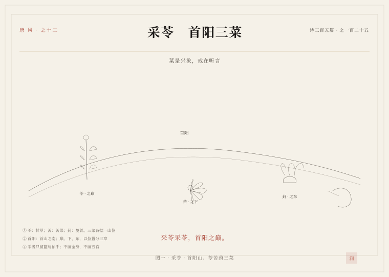
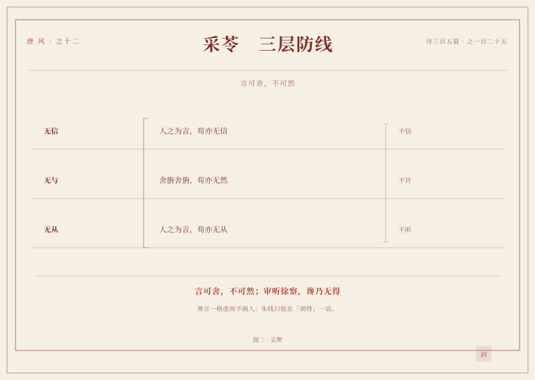

第一百二十五篇 采苓
唐风 · 之十二 SJ125
朗读 · 普通话
依经文原文朗读，章次不读出；配古琴底乐，不改速、不加拖腔。全库同一音色（豆包 TTS），非播音员录制。
一 解题
诗三判：
- 谁在说：戒谗之人。告人采苓于首阳之巅，人之为言，姑且无信、无与、无从；置弃其言，无以为然，则谗言何所得逞。
- 说什么事：三章换「苓／苦／葑」「巅／下／东」「信／与／从」，所戒同是听谗一事。菜三、地三、戒三，所不变者是「舍旃无然」。
- 为何编在此：唐风十二篇以此终。前十一篇或刺君、或伤民、或悼亡，末篇归于「听言」之戒。收卷意识：一编唐风，最后落在不可轻信人言。
《毛序》：“《采苓》，刺晋献公也。献公好听谗焉。”
朱子《诗集传》：“比也。首阳，首山之南也。巅，山顶也。旃，之也。此刺听谗之诗。言子欲采苓于首阳之巅乎。然人之为是言以告子者，未可遽以为信也。姑舍置之，而无遽以为然。徐察而审听之，则造言者无所得，而谗止矣。”
本库的看法：《采苓》是一首把「戒听谗」写成三叠劝止的诗。
苓、苦、葑是起兴取象，不是植物学辨识；无信、无与、无从是三层防线——不相信、不赞许、不听从。毛序坐实献公好听谗，朱子只作「刺听谗之诗」；本库从朱读，以献公听谗（骊姬谮太子、逐群公子）为背景，不把诗当成指认某一谗人。
断语：言可舍，不可然；审听徐察，谗乃无得。
先辨五事：「为言」是谗言伪言，不是好话；「旃」是「之焉」合音，不是旌旗；「与」是赞许、许可，不是参与；「从」是听从，不是跟随；「胡得焉」是反语「谗言何所得」，不是「谗言必得」。
二 经文
第一章
采苓采苓，首阳之巅。
人之为言，苟亦无信。
舍旃舍旃，苟亦无然。
人之为言，胡得焉！
第二章
采苦采苦，首阳之下。
人之为言，苟亦无与。
舍旃舍旃，苟亦无然。
人之为言，胡得焉！
第三章
采葑采葑，首阳之东。
人之为言，苟亦无从。
舍旃舍旃，苟亦无然。
人之为言，胡得焉！
分章：三章，章八句。
三 韵读
- 一章：巅、信，真部；旃、然、焉，元部；真元通押。
朱子叶「巅，典因反；信，斯人反」。
- 二章：下、与，鱼部；然、焉，元部。朱子叶「下，后五反」。
- 三章：东、从，东部；然、焉，元部。「然」「焉」三章重出，为收束之韵。
读法：三章起韵由真而鱼而东，戒字由信而与而从；「舍旃舍旃，苟亦无然」两联三章不改，是全诗的骨。
四 字义与名物
- 苓：甘草，毛传谓「大苦」。苦：苦菜，生山田泽中，得霜而甘。葑：蔓菁，芜菁一类。
- 首阳：首山之南（旧说以为首阳山）。巅：山顶。下：山下。东：山东。
- 为言：谗言、伪言。苟：且、姑且。无信：勿轻信。与：许、赞许。从：听从。
- 舍：置弃。旃：「之焉」合音，即「之」。无然：勿以为然。胡得：何所得，谓谗言何能得逞。
五 今译
采苓啊采苓，在首阳山顶。别人的那些谗言，姑且不要轻信。丢开它丢开它，姑且不要以为然。别人的那些谗言，又能何所得呢！
采苦菜啊采苦菜，在首阳山下。别人的那些谗言，姑且不要赞许。丢开它丢开它，姑且不要以为然。别人的那些谗言，又能何所得呢！
采葑啊采葑，在首阳山东。别人的那些谗言，姑且不要听从。丢开它丢开它，姑且不要以为然。别人的那些谗言，又能何所得呢！
六 章旨
- 一章：写「巅」与「无信」。谗言初至，第一层防线是不信。
- 二章：写「下」与「无与」。言犹未止，第二层防线是不赞许。
- 三章：写「东」与「无从」。三叠之后，第三层防线是不听从。
- 总收：信、与、从三层递进；舍旃无然三章不改，胡得焉一收，谗言自止。
七 诗教
- 兴：以采苓起兴，以采药之有所在，兴听言之有所审；物有其所，言有其所验。
- 观：观谗言如何一层层进入——信之、与之、从之；三层防线，撤一层则谗得入。
- 群：言者与听者相对；一造言于外，一审听于内，中间只隔一个「然」字。
- 怨：怨在「胡得焉」一诘；不指名谗人，所怨是听谗之习惯。
八 分寸与边界
- 不可把「为言」当好话。它是谗言伪言；一作好话，无信无与无从就成多疑。
- 不可把「旃」当旌旗。旃是「之焉」合音；一当旌旗，舍旃就成弃旗。
- 不可把「采苓」当采药寓言直说。它是起兴取象；一坐实采药，三菜就成农书。
- 不可把三菜当植物学图谱逐味辨种。诗中所换者是戒在听言；一味考据形色，诗眼就散。
- 不可把此诗读作攻讦某一谗人。所戒在听谗之心；一指名，劝止就成揭发。
- 不可把「胡得焉」读作谗言必得。它是反语，谗言无所得；一读必得，全诗的防线就翻过来。
九 存疑
- 诗旨：毛序「刺晋献公，好听谗焉」；朱子「刺听谗之诗」，不专指献公。本库从朱读，献公听谗为背景。
- 起兴：毛传「兴也」，朱子「比也」，或曰兴也；取象是比是兴，旧说不一。
- 首阳：是首阳山，还是「首山之南」；地望旧说多歧，诗中不可实指。
- 「苓」：毛传「大苦」，即甘草；一说苓为苓耳（卷耳）。从甘草。
- 「与」：毛传「许也」；一说「亲与、党与」。从赞许。
- 三菜次第：苓、苦、葑之先后，是否有深浅褒贬之比，旧无定说；诗中无文可证。
十 跨典
- 《论语·颜渊》：“浸润之谮，肤受之愬，不行焉，可谓明也已矣。”——谗言不行谓之明；此诗「无信、无与、无从」正是不行谮愬之法。
- 《论语·季氏》：“益者三友……损者三友。”——远佞人；听谗之戒，与远佞同为一端。
- 《孟子·梁惠王下》：“左右皆曰贤，未可也；诸大夫皆曰贤，未可也。”——偏听之戒；未可遽信，即「苟亦无信」之意。
- 《左传·庄公二十八年》：骊姬谮太子申生、逐群公子——献公听谗之事，毛序所指；诗不指此事，事为诗之背景。
- 《诗经·唐风·有杕之杜》（SJ123）：“中心好之，曷饮食之。”——前篇求贤，末篇远谗；一纳一拒，唐风十二篇首尾相照。
十一 双卡与图
六对：
| 为言（谗言伪言） |
为言（好话） |
| 旃（之焉合音） |
旃（旌旗） |
| 无信（勿轻信） |
无信（失信） |
| 与（赞许） |
与（参与） |
| 从（听从） |
从（跟随） |
| 胡得（谗何所得） |
胡得（谗言必得） |

图一 · 采苓 首阳山、苓苦葑三菜

图二 · 采苓 不信、不与、不从
读图三处：
- 三菜：图一苓、苦、葑各一株分列山顶、山下、山东；叶形可辨而不施面；菜是兴象，不画成菜畦图谱。
- 首阳：图一山脊一线，巅、下、东三处以位置分；不画采者全身，只留篮与手。
- 三层防线：图二三行「无信／无与／无从」，下贯「舍旃无然」一联；谗言一格虚而不画人，红只收在「胡得」一诘。